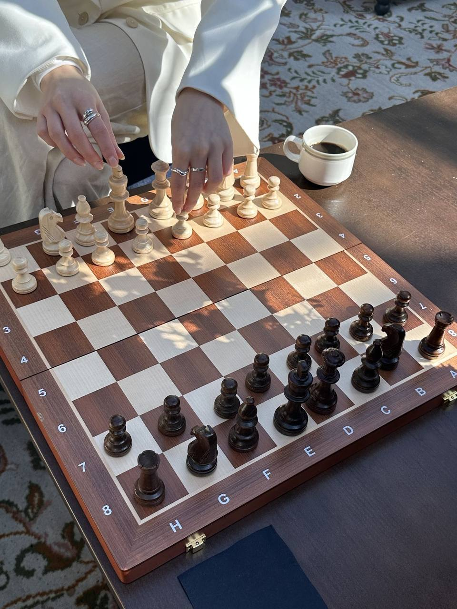

💜 My Favourites 💜
These are my favourite things that make my world brighter and full of joy 🌸
🎧 Listening to Music
I can’t live without music — it helps me calm down, express emotions, and stay inspired.

♟️ Chess
Chess helps me think logically and stay patient. It’s like solving a mystery with every move.

🧩 Rubik’s Cube
It’s fun and satisfying to solve! I can spend hours trying to finish it faster each time.
🎬 K-Dramas & Variety Shows
I love stories that make me cry, laugh, and smile.
🌈 Cartoons & Animation
I’ve always loved cartoons since I was little! They make me feel young again.
💃 Watching People Dance
I admire dancers — they express emotions through movement.